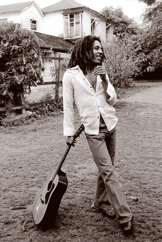

Toggle navigation
Houshmand Shirani-Mehr
Home
Research
Miscellaneous

Don't gain the world and lose your soul; wisdom is better than silver or gold.
― Bob Marley
Kathryn Schulz: On being wrong
The lottery of life
United Nations World Food Programme